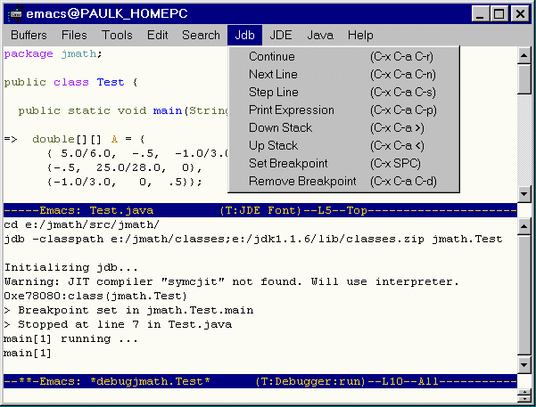
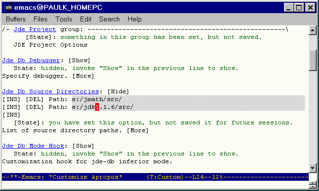

You should perform the following steps before attempting to use jdb.
jde-db-debugger
to jdb if you are using version 1.3 (or later)
of the Windows or Solaris versions of the JDK or
version 1.2.2 (or later) of the Linux version
of the JDK. Set jde-db-debugger to
oldjdb if you are using older versions of the
JDK.To start the debugger, run the jde-db command (JDE->Debug, C-c C-v C-d). The JDE splits the Emacs window into two frames. One shows the debugger interaction buffer. The other frame displays your application's main method. An arrow (=>) points to the main method's first line. The menu bar of the source buffer displays a menu (Jdb) of debug commands.

If you set the customization variable jde-db-read-vm-args to a non-nil value, the JDE compile command prompts you to enter debugger options in the minibuffer. It appends the options that you enter to the options specified via customization variables. The JDE saves the arguments that you enter in a minibuffer history list. You can recall previously entered options by pressing the up or down arrows on your keyboard.
If you set the customization variable jde-db-read-app-args to a non-nil value, the JDE compile command prompts you to enter command-line application arguments in the minibuffer. It appends the options that you enter to the arguments specified via the customization variable jde-db-option-application-args. The JDE saves the arguments that you enter in a minibuffer history list. You can recall previously entered options by pressing the up or down arrows on your keyboard.
The JDE lets you enter commands from either the current source buffer or from the debugger command-line interaction buffer. You can enter all debugger commands from the debugger buffer. You can enter only a subset of debugger commands from the current source buffer.
The current source buffer is the buffer in which your program is currently halted (initially the buffer containing the source for your program's main class).To enter a debugger command from the current source buffer, select the command from the jdb menu or type the shortcut key for the command. The jdb menu lists the shortcut keys for debugger commands.
To enter a command in the debugger interaction window, type the command at the debugger prompt and press the Enter key. To see a list of debugger commands, enter the command help.
Set a breakpoint at the line where you want to begin stepping through your program (see Setting Breakpoints). Then, type the run command. The debugger runs your program, stopping at the breakpoint. At this point, you can step through your code by entering commands in either the Java source buffer or the jdb interaction buffer.
The debugger executes the current line and stops at the next line. If the next line is in another source file, the debugger opens the source file in the source buffer (replacing the existing file) and positions the display at the new stopping point. At this point, you can enter a debugger command to display the value of a variable, set or clear a breakpoint, or perform some other operation.
Note. A blank source buffer indicates that the debugger cannot find the source file into which you have stepped. You should check your source path setting (see Specifying Source Code Paths) to ensure that it includes all source files in the execution path of your program.
You can set breakpoints in the debugger buffer or the current source buffer. When setting breakpoints from the current source buffer, you can set breakpoints only in the class displayed in the buffer. If you want to set breakpoints at other points in your program, you must set them from the debugger interaction buffer.
The stop in command sets a breakpoint in a specified function. For example,
> stop in myapp.Main.main
sets a breakpoint in the main method of myapp.Main class. The stop at command sets a breakpoint at a particular line. For example,
> stop at myapp.Main:20
sets a breakpoint at line 20 of myapp.Main class. Use the clear command to clear a breakpoint from a specified line. For example,
> clear myapp.Main:20
clears the breakpoint set at line 20 of myapp.Main.
To set a breakpoint on any executable line in the source file buffer, click on the line and select Jdb->Set Breakpoint (C-x SPC). To clear a breakpoint from a line in the current buffer, click on the line and select Jdb->Remove Breakpoint (C-x C-a C-d).
The jde-db-source-directories variable specifies the directories the JDE should search for source for classes visited by the debugger as you step through your program. You can set the value of this variable in a customization buffer or in the minibuffer.
To use customization, select JDE->Options->Project and edit the jde-db-source-directories entry in the resulting customization buffer. To show the current value of the variable, select the Show/Hide button. To add a directory, click the last INS button in the list and enter the directory in the resulting edit field. When you are done adding entries, press the State button to set the variable. To save the setting in your project file, select JDE->Options->Save Project. The following figure shows an example of the jde-db-source-directories entry in a customization buffer.

You must specify the paths of the top-level directories of any source code that you might visit while debugging your application. The source code directory structure must mirror your app's package structure. For example, suppose that your application includes a set of classes packaged in the myapp directory. Then, the source for those classes must be reside in a directory named myapp and you must specify the path of myapp's parent directory.
Tip: If you want to step through the JDK source code, select the source code install option when you install the JDK and set the jde-db-source-directoiries variable to the top-level directory containing the source code. The JDE will use the JDK's package structure to find the source code in the subdirectories.
Tip: Save the setting of jde-db-source-directories in your prj.el file (see Saving Project Settings) to avoid having to set them every time you start a session.
The debugger lets you display the value of any local variable currently in scope. To display a variable from the debugger buffer, enter print x at the debugger prompt where x is the name of the variable whose value you want to display. The debugger displays the value of the variable in the debugger buffer. To display a local, in-scope variable whose source is displayed in the debugger source buffer, put the point on the variable and select Jdb->Print Expression or type C-x C-a C-p. To display all variables in scope, enter locals at the debugger command prompt in the debugger buffer.
When the debugger displays a user-defined object, it prints the value returned by the object's toString() method. By default, the toString() method returns the object's id. You can override the toString()
The JDE allows you to specify debug options by setting JDE configuration variables.You can use the Emacs customization feature to set debug variables interactively. To use the customization feature, select Options->Debug from the JDE menu. (See Configuring the JDE for more information on using the customization feature). In some cases, the JDE also provides functions for setting the buffer-local values of the compilation variables. To save the compilation settings in the project file (see Using Project Files) for the current source buffer, select Options->Update Project from the JDE menu.
The following table lists the JDE run-time variables and the functions used to set them.
| Variable | Group | Usage |
|---|---|---|
| jde-db-debugger | Project | Specify debugger. The command jde-db-set-debugger sets the buffer-local value of this variable. |
| jde-db-source-directories | Project | Specify location(s) of source files that can be visited while stepping through a program. The command jde-db-set-source-paths sets the buffer-local value of this variable. |
| jde-db-set-initial-breakpoint | Project | If non-nil, causes the JDE to set an initial breakpoint at the beginning of the application's main method and run the application at debugger startup. This variable is t by default. If you want to specify an initial breakpoint, set this variable to nil. |
| jde-db-mode-hook | Project | Customization hook for jde-db inferior mode. |
| jde-db-startup-commands | Project | List of commands to run at debugger startup. This variable overrides jde-db-set-initial-breakpoint. |
| jde-db-marker-regexp | Project | Regular expression used to recognize breakpoint markers in the debugger output. This expression should have two subexpressions: the first matches the name of the class in which the program stopped; the second, the number of the line at which the program stopped. By default, this variable is set to an expression that matches breakpoint markers in jdb's output. |
| jde-global-classpath | Project | Specify class paths for compile, run, and debug commands. The command jde-set-global-classpath sets the buffer-local value of this variable. |
| jde-db-read-vm-args | Project | Specifies whether to read debugger VM arguments from the minibuffer. |
| jde-db-read-vm-args | Project | Specifies whether to read command-line application arguments from the minibuffer. |
| jde-db-option-classpath | Debug | Specifies the classpath for the Java interpreter. This option overrides the jde-global-classpath option. |
| jde-db-option-verbose | Debug | Print messages about the running process. |
| jde-db-option-properties | Debug | Specify property values. |
| jde-db-option-heap-size | Debug | Specify the initial and maximum size of the interpreter heap. |
| jde-db-option-stack-size | Debug | Specify size of the C and Java stacks. |
| jde-db-option-garbage- collection |
Debug | Specify garbage collection options. |
| jde-db-option-java-profile | Debug | Enable Java profiling. |
| jde-db-option-heap-profile | Debug | Output heap profiling data. |
| jde-db-option-verify | Debug | Verify classes. |
| jde-db-option-vm-args | Debug | Specify command-line arguments to be passed to the Java VM. The command jde-db-set-args sets the buffer-local value of this variable. |
| jde-db-option-application-args | Debug | Specify command-line arguments to pass to the application. The command jde-db-set-app-args sets the buffer-local value of this variable. |